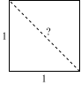

A short history of numbers
Mathematics as a world of ideas
Much of mathematics considers idealised objects and their properties (e.g., the perfect circle, with radius \(r\), for which the area is given by \(A=\pi r^2\)). These idealised objects often do not exist in the real world. Yet, both the origins as well as the applications of many notions in mathematics, in the end, lie in the real world. But how can an idealised concept be relevant in the real world, given that the real world is never perfect?
The reason for this is quite simple: many everyday phenomena and objects can be approximated really well by idealised objects, of which we know the properties.
Whole numbers
Counts
One of the simplest idealised objects in mathematics is a whole number, resulting from a count. The concept of whole numbers and being able to reason about them has a long history: even in our early stages as hunter-gatherers, it was extremely useful (in fact, critical to our survival) to be able to count, for instance, how many apples your tribe had collected, how many your tribe ate each day, and, hence, when the current stock would be depleted. Perhaps somewhat unsurprisingly, many animals seem to have a rudimentary understanding of numbers:
Such whole numbers are often referred to as natural numbers. The complete set of natural numbers, starting at zero, and increasing by one at a time, without end, is sometimes denoted by \(\mathbb{N}\). That is, \(\mathbb{N}\) consists of the numbers \(0,1,2,3,\ldots\), where the dots signify that the numbers just keep on increasing.
So what’s idealised about natural numbers? Considering the case of counting apples, what if a fellow hunter-gatherer had so much appetite that she took a bit out of one the apples that you collected. Is that still an apple? To some degree: it depends… Was it a big bite? Or only a really small bite? And how about small vs. big apples? Perhaps five big apples provide more nutrition than six small apples. Clearly, the number one has relies on some idealised notion of what counts as a real apple and what does not. To make matters worse, some things are rather hard to count in a discrete fashion (e.g., the time from sunrise until sunset).
Yet, despite the fact that natural numbers can be thought of as counts of idealised, discrete units, its practical merits are undeniable. For instance, we can count how many students show up for a tutorial, without there being any ambiguity in that count. That count reflects a real-world fact that we can all, as reasonable beings, agree on.
Counting systems
Decimal counting system
The way in which we count evolved using our fingers. For instance, in many cultures, the number of extended fingers reflects a count which can, thus, range from zero to ten:
To these numbers we have learnt to assign written symbols, such as \(0,1,2,3,4,5,6,7,8,9,10\), where each subsequent symbol means your count has increased by exactly one. However, being able to count only to ten is too limited. Hence, we started combining multiple symbols, as you already see in the number \(10\)—in our so-called base-\(10\) or decimal system, \(9\) is the highest single-digit number. If we add one to that, we simply write down a new digit on the left, which we initialise at \(1\), while the right digit is reset to \(0\). Hence, we end up with \(10\).
Once we reach \(19\), increasing that number by one means that we have again exhausted our symbols for the last digit. So we increase the digit directly to the left by one, and reset the right digit to zero, yielding \(20\). This process can be repeated until we reach \(99\): both digits have reached the largest value.
How to add one to that number? We simply write down yet another digit on the left, and reset all other digits to \(0\). Hence, we get \(100\). This process can be repeated to reach extremely large numbers, with only a limited number of digits. For instance, with just 80 subsequent digits, we could write down how many protons there are in the entire observable universe.
Binary counting system
At a fundamental level, computers, smartphones, and other electronic devices do not have ten fingers to keep track of quantities. Instead, information is stored and manipulated in the form of bits, which can be thought of as on/off-switches, in which we consider ‘on’ as being one unit more than ‘off’.
As a result, the natural counting system for a computer is binary: each digit can be either \(0\) or \(1\), where \(0\) is the smallest digit and \(1\) the largest digit. And if we add one to that largest digit, we simply do so by introducing a new digit on the left, which we initialise at \(1\), while reseting the digit on the right to \(0\), and so on, as shown in Table 1.
| Decimal | Binary |
|---|---|
| 0 | 0 |
| 1 | 1 |
| 2 | 10 |
| 3 | 11 |
| 4 | 100 |
| 5 | 101 |
| 6 | 110 |
| 7 | 111 |
| 8 | 1000 |
| 9 | 1001 |
| 10 | 1010 |
Negative numbers
Since numbers evolved from counting physical objects, it took mathematicians a long time to grasp the concept of negative numbers. After all, you cannot have a negative number of apples. Thus, equations (more on that later) with negative solutions (e.g., \(4x + 20 = 4 \Leftrightarrow x=-4\)) were considered to be absurd by Greek mathematicians. Even as late as the 16th century, negative numbers were, in academic work, sometimes still referred to as absurd numbers.
However, even for simple accounting purposes, such as a decrease in your stock of apples, a debt to a counterparty, and so on, the uses of negative numbers became ever more apparent. Nowadays, negative numbers are recognised as an integral part of everyday calculations.
There are seven important things to remember about negative numbers:
- We denote negative numbers by placing the minus sign (\(-\)) in front of the number. So \(-4\) denotes negative four. Positive numbers, on the other hand, are either denoted by placing the plus sign (\(+\)) in front of it or by not writing down the sign altogether (more common, just like in spoken language; e.g., we typically do not ask for plus four slices of bread). So both \(4\) and \(+4\) denote positive four, where \(4\) is the more common notation.
- Adding up negative \(x\) and positive \(x\), where \(x\) is a number, yields zero: they are opposite numbers that cancel when added up. So \(-x+x=0\).
- The more negative a number is, the lower it is. So, for example, \(-5 < -4\), while on the positive side, \(5 > 4\). In words, we say \(-5\) is less than \(-4\), while \(5\) is greater than \(4\).
- The negative of a negative number is a positive number. That is, \(-(-x)=x\).
- A negative number \(-x\) times another negative number \(-y\) yields a positive number, which is equal to multiplying \(x\) and \(y\). So \(-4\) times \(-3\) yields the same result as \(4\) times \(3\), which is \(12\).
- A negative number \(-x\) times a positive number \(y\) yields a negative result, which is equal to the negative of multiplying \(x\) and \(y\). So \(-4\) times \(3\) equals the negative of \(4\) times \(3\), so \(-12\).
- A negative number \(-x\) can also be thought of as \(x\) multiplied by \(-1\). So simply using (i) all positive numbers, (ii) multiplication, and (iii) only a single negative number, namely \(-1\), we have a way to describe all negative numbers that exist.
Infinity
The introduction of negative numbers is what we call an abstraction: we started with something clearly rooted in our understanding of reality at the time (i.e., counts), and we made the concept a bit more general (i.e., negative numbers), to help us solve more problems, that are still relevant in everyday life (e.g., keeping track of someone’s debt).
Two further abstractions that arose as mathematics matured were the number zero (which effectively says there is nothing to count) and an infinitely large number, denoted by \(\infty\), simply called infinity. Clearly, in our everyday lives infinity does not exist: we live in finite world, with finite resources, finite energy, and so on.
Yet, zero and infinity are extremely useful to calculate certain things: they are an crucial part of calculus (i.e., differentiation and integration), which is all about finding optimal points (e.g., how much crop to grow to maximise profit?), areas and volumes (e.g., what is the volume of a ball with radius \(r\)?), as well as certain expectations (e.g., what is my expected profit, under all kinds of circumstances, that happen with different probabilities?).
Just like any number \(x\) has a negative counterpart \(-x\), so does \(\infty\) have negative counterpart \(-\infty\).
The complete set of all whole numbers, so both negative and positive, ranging from \(-\infty\) to \(\infty\), are called the integers. This set of numbers is sometimes denoted by \(\mathbb{Z}\). That is, \(\mathbb{Z}\) consists of \(\ldots,-3,-2,-1,0,1,2,3,\ldots\), where the dots signify that numbers just keep on going on, all the way down to \(-\infty\) on the left and all the way up to \(\infty\) on the right.
Rational numbers
Another important class of numbers are so-called rational numbers. The reason for their invention is, again, very much rooted in our everyday experience. If you have a single apple to share equally with a friend, you both have half an apple. That is, you both have \(\frac{1}{2}\), where the upper term (here \(1\)) is called the numerator (Dutch: teller) and the lower term (here \(2\)) the denominator (Dutch: noemer).
More generally, rational numbers are written in the form \(\frac{a}{b}\) where \(a\) and \(b\) are both integers (so including negative numbers). When considering counts (so \(a\) and \(b\) both being natural numbers), \(a\) tells us how many units of one thing we have (e.g., the number of apples \(a\)) and \(b\) tells us across how many other units to divide this (e.g., the number of people \(b\) who get to share those \(a\) apples).
The complete set of all rational numbers, so \(\frac{a}{b}\), for any integer \(a\) and any integer \(b\), is denoted by \(\mathbb{Q}\).
Irrational numbers and real numbers
In the past, it was thought \(\mathbb{Q}\) contained all numbers in existence, even numbers such as \(\pi \approx 3.14\), which is defined as the ratio of the circumference (Dutch: omtrek) of a perfect circle, divided by twice its radius. However, this turns out to be wrong: \(\pi\) cannot be expressed as the ratio of two whole numbers. And \(\pi\) is no exception—there exist infinitely many numbers that cannot be expressed as the ratio of two integers. Such numbers are said to be irrational.
For example, take a square with sides of length one, and calculate the length of a line that you draw from one corner of the square to the corner on the opposite side, called the hypotenuse (Dutch: schuine zijde). That is, you split the square into two identical right triangles (Dutch: rechthoekige driehoek):

That length, by Pythagoras’ Theorem, equals \(\sqrt{1^2 + 1^2}=\sqrt{2}\), which is a number that also cannot be described as the ratio of two whole numbers. Nevertheless, the Pythagorean community in the ancient Greece considered the whole idea of irrational numbers to be heresy. They refused to accept that \(\sqrt{2}\) was irrational, and attempted to suppress proofs of this claim:
However, proof for the existence of irrational numbers is undeniable. And, as discussed, they arise naturally in geometry as well as calculus, for instance, when we consider a number \(e\), such that the rate of change of \(e^x\) with respect to \(x\), also equals \(e^x\) (Euler’s number).
Combining the irrational and rational numbers into a grand set of numbers, we arrive at the set of so-called real numbers, which is denoted by \(\mathbb{R}\). This set contains any number on the number line from \(-\infty\) to \(\infty\), regardless of whether irrational or rational. The real numbers are in fact the working horse of much of modern mathematics, including calculus.
Have a look at the YouTube video below, for a short proof of why \(\sqrt{2}\) is indeed irrational. When watching it, pay close attention to the mathematical tools employed there (such as proof by contradiction). Pretty neat, isn’t it?